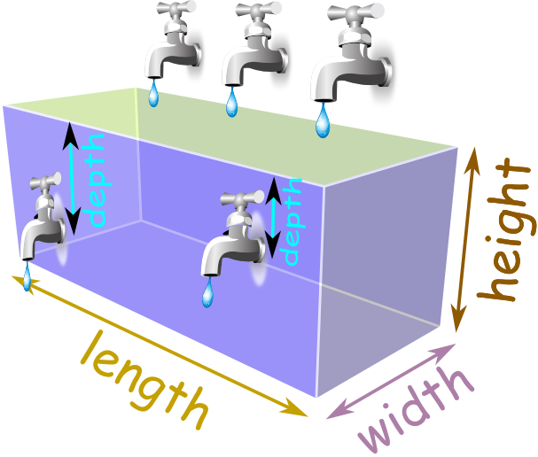

1.17. Pool ¶
In this question you are asked to calculate the time to fill a pool of rectangular prism structure . The pool is filled and emptied by faucets. There are three faucets to fill the pool and two faucets to empty the pool.
The faucets that are used to empty the pool can be placed on varying depths (i.e. they are not necessarily placed on the bottom of the pool) and they are guaranteed to be on different depths.

Inputs will be given as integers in the following order:
The capacity of the first faucet (in m^3/min), filling
The capacity of the second faucet (in m^3/min), filling
The capacity of the third faucet (in m^3/min), filling
The capacity of the fourth faucet (in m^3/min), emptying
The capacity of the fifth faucet (in m^3/min), emptying
The depth of the fourth faucet (in meters)
The depth of the fifth faucet (in meters)
The length of the pool (in meters)
The width of the pool (in meters)
The depth of the pool (in meters)
Note that the fourth faucet is always placed deeper than the fifth faucet and hence, the fifth one never can be at the bottom of the pool.
As an output you need to print how much time is required to fill the pool as a float (see the sample output for the output format). 1 digit after decimal is sufficient.
Sample I/O:
Input:
2
2
2
1
1
20
10
1
1
20
Output:
“Time to fill the pool is 4.5 mins”
# the capacities of faucets
f1 = int(input())
f2 = int(input())
f3 = int(input())
f4 = int(input())
f5 = int(input())
# depths of 4th and 5th faucets
d4 = int(input())
d5 = int(input())
# length, width and depth of the pool
l_p = int(input())
w_p = int(input())
d_p = int(input())
# heights of the fourth and fifth faucets from the bottom of the pool
h4 = d_p - d4
h5 = d_p - d5
# Time to fill the volume between the bottom up to height of fourth faucet
t1 = (h4 * w_p * l_p) / (f1 + f2 + f3)
# Time to fill the volume between the faucet four and five
t2 = ((h5 - h4) * w_p * l_p) / (f1 + f2 + f3 - f4)
# Time to fill the rest
t3 = ((d_p - h5) * w_p * l_p) / (f1 + f2 + f3 - f4 - f5)
print(“Time to fill the pool is %.f mins” % (t1 + t2 + t3))